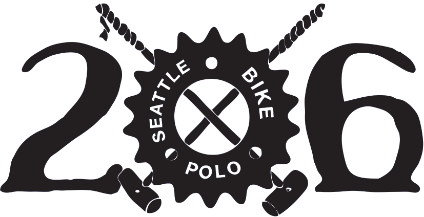

- We play at Judkins Park 47.591401,-122.302915
- Saturdays 2PM till dark
- Sundays 11AM till dark
- Wednesdays 6PM till dark
- Come out June 1st and 2nd 2024 for the Cascadia Qualifier
- @206bikepolo on Instagram
- Talk to everyone on Slack
- Edit this website on GitHub